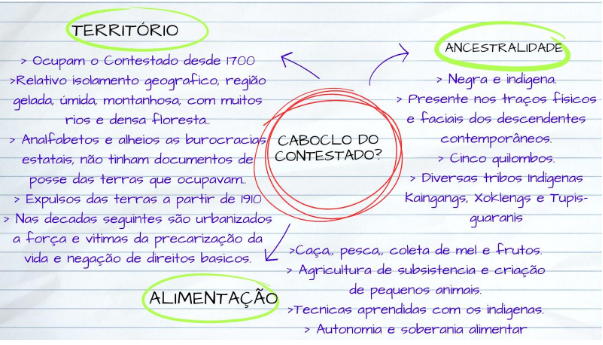

A Batalha do Trem e os Caboclos do Contestado.
Os Caboclos do Contestado eram um povo formado em sua maioria por mestiços de negros e indigenas que desde 1700 ocupavam o Contestado, região montanhosa entre a Argentina a oeste o Rio Iguaçu ao Norte e o Rio Uruguai ao sul se estendendo pelo Sertão Catarinense e por boa parte do Parana.

Caçador, cidade que sedia a Batalha do Trem, tem mais de 70 mil habitantes e é uma das cidades mais populosas do Contestado. Tendo a maioria de sua população concentrada em áreas periféricas e formada de descendentes de Caboclos do Contestado. Mas como os caboclos que viviam nas florestas foram parar nas favelas? A grande Tragédia Cabocla começou a partir de 1910 com o avanço do capitalismo predatório sobre o até então isolado e desconhecido Contestado, esse avanço se materializou na construção de uma ferrovia , na exploração da madeira , na expulsão dos caboclos de suas terras de uso ancestral e na colonização por parte de imigrantes trazidos da Europa dessas mesmas terras. Entre 80 e 200 mil pessoas foram desterradas no Contestado, uma parte dessas pessoas foi capaz de organizar-se e partir para a guerra, inicialmente contra as empresas multinacionais que exploravam a madeira e colonizaram a região e depois contra tropas do exército e policiais enviadas para defender os interesses dos exploradores. A guerra durou 5 anos e foi um desastre para os Caboclos, que foram massacrados por
forças infinitamente mais poderosas no que é considerado por alguns genocídio, ou tentativa de genocidio e o maior massacre de camponeses da história do Brasil. Findada a guerra os caboclos refugiados e sobreviventes passaram a ser estrangeiros em sua propria terra e viram um mundo novo ser construido pelos europeus recém chegados sobre as ruinas do que antes era a sociedade cabocla, aos poucos os caboclos urbanizaram-se instalando-se em areas devolutas ou publicas as margens de rios, estradas, em terrenos íngremes, alagadiços ou pedregosos, iniciando um periodo de decadas em que os caboclos seriam invisibilizados, marginalizados e anulados cultural e socialmente.
A cena Hip Hop em Caçador, cidade no interior de Santa Catarina que sedia a Batalha do Trem sempre foi constituída por iniciativas individuais ou de pequenos coletivos. O movimento chegou a cidade tardiamente no final dos anos 90 e começo dos 2000 através das músicas de artistas já consolidados como Racionais MCS e encontrou aqui terreno fertil para se desenvolver e se enraizar. Embora não seja um grande centro urbano Caçador tinha aquela época grande parte da sua população vivendo abaixo da linha de pobreza em extensas áreas periféricas, sendo em sua grande maioria descendentes de Caboclos do Contestado, povo mestiço de negros e indigenas, considerados os catarinenses originais e que foram expulsos de suas terras a partir de 1910 com a Guerra do Contestado e refugiando-se em centros urbanos como Caçador.
A cultura Hip Hop floresceu em Caçador inicialmente através de grupos de dança, alguns grafiteiros e depois de bastante tempo, a partir de 2015 começaram a surgir os primeiros DJs e Mcs, ligados às batalhas de rima.
Atualmente a região do Contestado é a mais pobre e menos desenvolvida de Santa Catarina, com baixos índices de desenvolvimento e altos índices de violência, desemprego ou sub-empregos. Essa situação se deve principalmente ao fato das varias esferas de governo sempre terem se negado a adotar qualquer tipo de medida de compensação, indenização ou reparação histórica aos Caboclos do Contestado e seus descendentes pelas atrocidades a que foram submetidos durante e depois da guerra, invisibilizando e marginalizando o drama caboclo.